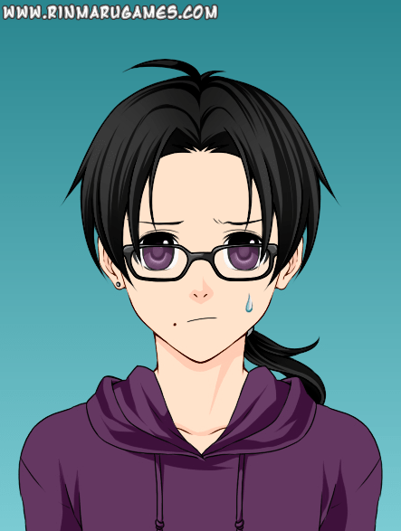
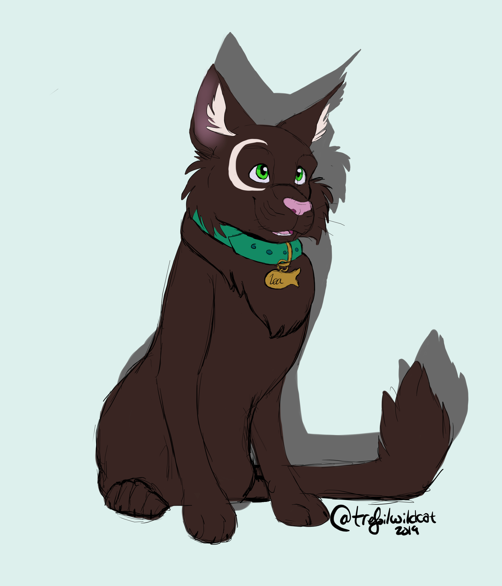
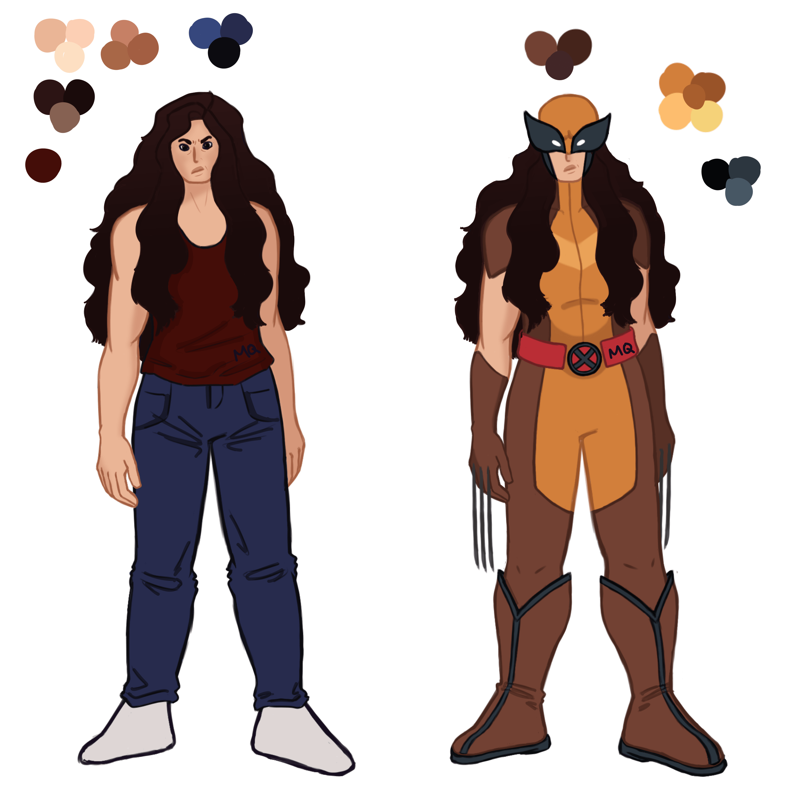
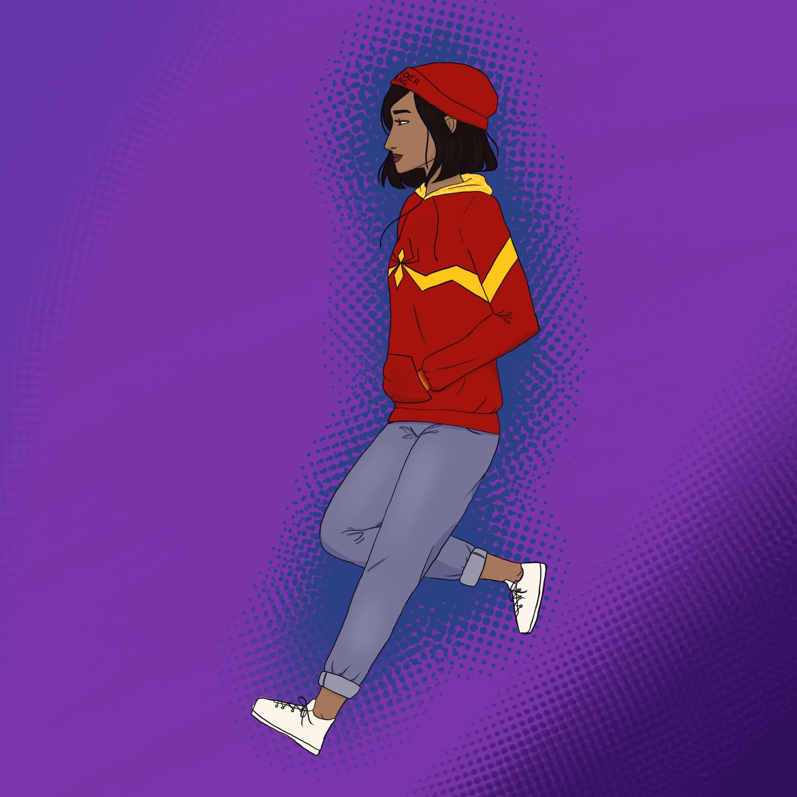
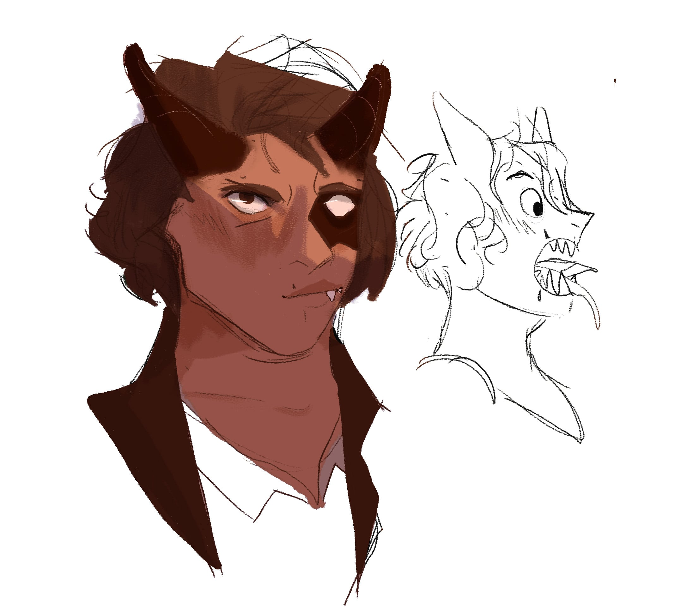
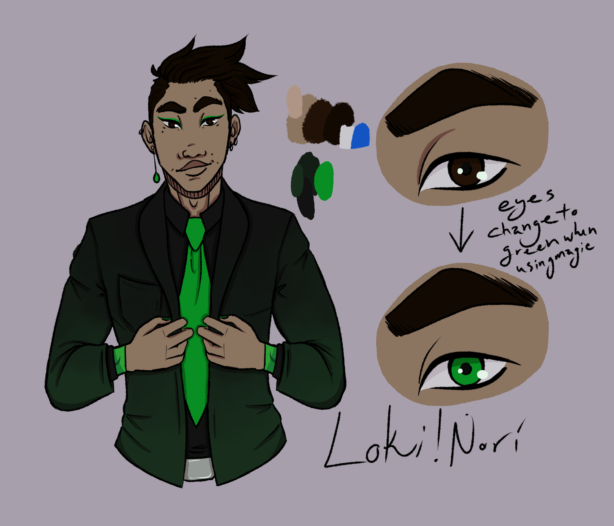
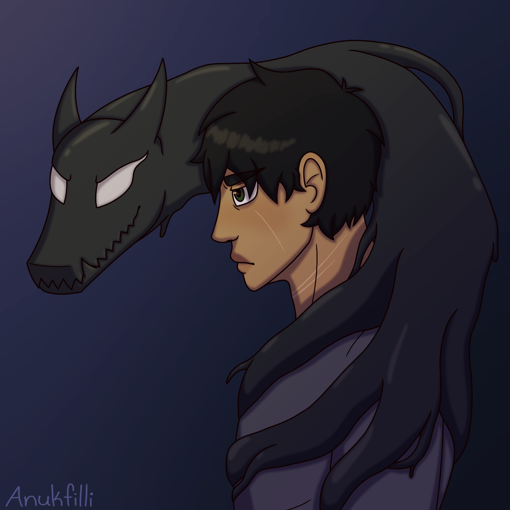
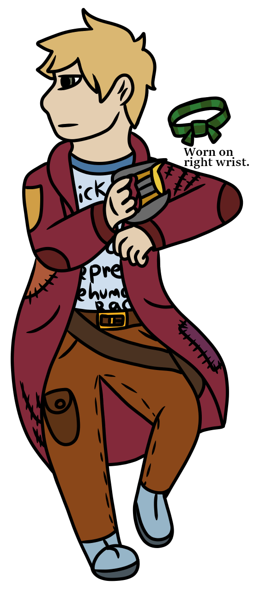

Pronouns: He/him, They/them, she/her (Magically Genderfluid)(usually male tho)
Sexuality: Pansexual God baby
Universe: Alpha
Backstory Quirks: Born a Halfie (frost mermaid) and adopted by the gods he returned to the human realm called Earth after one of his tantrums, he uses a fake human name to lie low and not be found by the gods again while still causing some... Mischief~
Personality: Childish at times (often), mischievous, likes games and gambling (cheats to win)
Other: Can and Will mess with everyone he can. Will hiss like a cat, flexible bih
Physical Appearance: W.I.P
Marvel Character: Iron Man
Age: 15
Pronouns: He/Him
Sexuality: Big gay in denial
Universe: Alpha
Backstory Quirks: Dakota is a sort of child genius, able to invent and improve new technologies with ease. He has always been a straight A student in school and even skipped a few grades when he was younger. However, he has a bit of trouble passing classes now, because well- he doesn’t show up for any of them. He doesn’t find the need to, since he inherited his parents’ fortune and has everything he could ever need at Stark Tower. Even before his parents went missing before his fifteenth birthday, he’s been a young delinquent, using his gadgets and tools to execute pranks on teachers and the few unfortunate people he holds petty grudges against. He built his Iron Kid suit because he found out pretty quick that flying around and fighting villains was just as fun as it looked he gets bonus points for actually protecting the people of New York. Dakota’s a rude kid, but he has a good heart somewhere in there.
Physical Appearance: Dakota has silky black hair and hazel eyes, with a fair complexion. He always wears expensive clothes just to show them off. [Image requires permission before use]
Marvel Character: Winter Soldier
Age: He isn’t really sure, but he thinks he’s somewhere around 16/17
Pronouns: He/him
Sexuality: Questioning, either gay or bi
Universe: Alpha
Backstory: He doesn’t remember his life before he was taken. Maybe he was a preteen, maybe he was already a teen, maybe he was a kid. Sometimes he remembers, in fragments, but for the most part... he only remembers pain. His memory problems persist and he’s prone to forgetfulness, a side effect of whatever the hell HYDRA did to him.
Personality: kind of standoffish, easy to anger, but when you get past that... he’s soft. A self-blaming, self-hating, traumatized kid, but he tries to be a kind one. As his story continues, he’ll start to let his true personality shine through. He’s snarky and sarcastic and always ready to Fight(TM), but also just really wants a nap. He has a protective streak a mile wide, and is honestly.... kind of a nerd. He just freed himself from HYDRA after its collapse, so he’s a bit unstable, to say the least.
Other: He feels like he’s looking for someone, but he’s not sure who.
Physical Appearance: Shoulder-length wavy brown hair with a golden undertone that darkens in the wintertime. He wears it in a high ponytail because he likes the way it swishes. He’s not super tall, roughly 5”9, but he’s also not too short. He’s muscular and has a metal right arm, and a metal left leg. (Sometimes, when he’s in a joking mood, he jokes that they balance each other out). He has a kinda-square, kinda round face and a hooked nose, with eyes that have been a topic of dispute. Are they blue? Gray? Green? Nobody knows. He doesn’t even know. He’s pale with circles under his eyes and looks scrawny, but his clothes hide a muscular body.
Marvel Character: Thor
Age: 15
Pronouns: He/him
Sexuality: Ace/heteroromantic
Universe: Alpha
Backstory Quirks: Marcus was a normal kid who would pick fights with bullies who where often much bigger then him in the defense of other kids. He grew up not knowing his family raised by a family friend. One day he was wrong place as he stumbled onto a fight between alpha's original Thor and a criminal group in which Thor took to much damage and went down. Out of reflex Marcus grabbed Mjolnir to aid the hero he idolized but couldnt save him only to find out Thor was his father.
Personality: Hotheaded at times but mostly chill
Other: Mjolnir is sentient and can transform into diffrent melee weapons and storage
Physical Appearance: Blond with electric blue eyes [Image requires permission before use]
Backstory Quirks: She’s not as interesting as a person, but after being hit with the news that a close family member passed away, she decided to adopt an animal to keep her company. After Gizmo made himself at home in her tiny apartment, he started to act a bit… Strangely. Needing more food than the recommended amount for a dog his size and other things. Zoe didn’t really have time to visit the vet so she just thought this was normal for a growing dog, but after being attacked by a crazy ex boyfriend, Gizmo stepped in and well…. Ate him. After this, Zoe was terrified but learned to appreciate the new part of her furry companion, Venom.
Personality: Zoe’s really anxious like 90% of the time when she’s around others, because Venom is now her second pet. Trying to buy food for them is just as painful as it sounds.
Other: Her dog is the one that becomes the host for Venom, she just carries around hair spray and a lighter just incase they decide not to listen.
Physical Appearance: Zoe has short blonde hair that curls at her shoulders, she usually wears sweatshirts and other dull colors. Her dog, Gizmo, is a medium size boxer who is attached to Zoe by the hip.
WARNING FOR MENTIONS OF SUICIDE AND SUICIDE ATTEMPT
Marvel Character: Doctor Strange
Age: 16
Pronouns: He/Him
Sexuality: Asexual Biromantic
Universe: Beta
Backstory: Daniel was born to Adam Nation and Mikomi Kamiyama on April 20, 2002 in Okinawa, Japan. At the age of 2, his father brought him overseas to the US to Manhattan, New York. Shortly after their arrival, while Adam was raising funds to bring Mikomi over, Adam was diagnosed with cancer. Despite seeking treatment, Adam died and Daniel was placed into foster care and deemed an orphan.
On his 13th birthday, Daniel came out to his foster parents as a trans boy. He was promptly placed in conversion therapy, and after only a few weeks attempted suicide. After recovering and spending time in a psych ward, Daniel was taken out of conversion therapy but was unallowed to be himself at home. Daniel spent most of his time at a trans youth resource center where he met Beatrice Muse, a trans woman and a Master of the Mystic Arts looking over the New York Sanctum. After telling Bea his trans experience, Bea adopts him and brings him to the Sanctum where he shows an interest and talent for the Mystic Arts.
Personality: Daniel is an introvert and has a hard time talking to new people, yet he's charismatic, albeit crude and blunt. He spends most of his time reading, his favorite genres being horror and mystery (he's a big fan of Poe and Lovecraft stories). When he's not busy with schoolwork, he's reading up on the Mystic Arts and honing his skills.
Other:
When he still lived with his foster parents, Daniel learned how to play the piano.
Daniel has a superb echoic memory and can remember every piece of music he ever hears. Due to this ability, he can transcribe music instaneously when he chooses to play the piano.
Like MCU Doctor Strange, the Cloak of Levitation takes a liking to him and tries to keep him safe. When not in the form of a cape, the Cloak (which Daniel affectionately calls Levi) remains on Daniel in the form of an infinity scarf.
Daniel has two scars, one on each wrist, from his attempted suicide. He wears hoodies so the sleeves cover them up (and he also just really likes hoodies).
Physical Apperance: Daniel is skinny, but still healthy. He's approximately 5'6". [Image to the Right]
Marvel Character: Prowler
Age: 26
Pronouns: He/him
Sexuality: Straight
Universe: Beta
Backstory Quirks: As a kid he was a very gifted and talented young lad creating fascinating gizmos out of whatever he could find. After word went out around about Donni’s amazing inventions he then started selling them to people which was the start of a well-paid business, as he got older he went off to do fetch quests while keeping some of his best inventions for the job along with a flashy new costume. Now he operates an underground business taking on a new alias known as The Prowler.
Personality: Right off the bat he is seen as a self-centered, thrill seeking prick who sees his payment as his only priority, but at times he’s actually a pretty nice guy.
Other: Not only is he a skilled inventor with high levels of intelligence but he’s also skilled in combat, agility and stealth for field missions
Physical Appearance: he stands at 5'7", has mild dark skin, and has a thin but built body structure. He also talks in a deep and gritty voice when ever he has the mask on. [Image requires permission before use]
Marvel Character: Winter Soldier
Pronouns: They/Them
Sexuality: ????
Age: 75 (looks 18-20)
Universe: Beta
Backstory Quirk: Made in the 1940's from the severed arm of the initial Winter Soldier they were grown as a clone and trained by Hydra to become the ultimate killing machine. However, over a good amount of time the initial WS began to secretly teach them what it meant to be more than a gun. 70 years in and out of cryo-sleep and between assassination plots Jaime found their name, who they could trust, and their Humanity. Now in the present day they awake from sleep to find that they are alone. Their base abandoned, the initial gone, and no orders to go off of they've chosen to try and wash the blood from their hands whilst exploring this bright new world.
Personality: Quiet, broody, extremely intelligent, she doesn't talk to anyone she doesn't know. Very much on edge and aware of her surroundings at all times. Is very bad at Social Interaction.
Other: The first Winter Soldier (Buck Buck) is the only one they really consider themselves close to, even familial. Even if they look nothing alike due to the "donated" set of genes they used to make them whole. They're still looking for him. They really like cats and have one little black one that likes to follow them around. Because they don't really have a citizenship they have taken to stealing and burglary to supply money for food and such. Currently living with Winona and Havoc
Physical Appearance (Will draw later): Pixie style brown hair with long bangs, slanted grey eyes, yellowish-tan skin, slender but well muscled, androgynous as f***, 5’8 [Image requires permission before use]
Marvel Character: Rufus
Age: 4 in cat years, 26 in people years
Pronouns: She/her
Sexuality: Lesbian
Universe: Beta
Backstory Quirks: She was the pet of an evil scientist, who experimented on her and gave her her powers. She was rescued by a band of heroes and now travels with them fighting crime.
Personality: Very sarcastic, very dumb. exactly how every cat should be, think Salem from Sabrina the Teenage Witch
Other: Her powers are telepathy and bioluminescence.
Physical Appearance: [Image to the Right]
Marvel Character: Wolverine
Age: Appears mid-thirties, much older than that.
Pronouns: She/her
Sexuality: Asexual biromantic
Universe: Beta
Backstory Quirks: Born in 1922 as Mildred Price. Her powers manifested right at the start of the Great Depression.
Personality: Very tired, wants to be left alone but can’t shake these goddamn kids who seem to need her help. Gives off a grumpy dad vibe and acts as such. A drifter, has kept various odd jobs and now has a bunch of random skills to draw upon. Tells stories about her life when asked, only about half of them are true.
Other: Likes animals, especially cats (of all sizes). Doesn’t like killing animals for sport and only does so out of necessity. Never takes more than she gives.
Physical Appearance: Short, muscular, Caucasian. She has a mane of wild, curly, black hair that keeps growing about as fast as she can cut it. Often can be seen wearing an old pair of ratty jeans, a tank top, and an old leather jacket. No shoes. [Image to the Right]
Marvel Character: Spider-Man
Age: 22
Pronouns: She/Her
Sexuality: Flaming Bisexual
Universe: Beta
Backstory Quirks: Born in jail, makes her able to read people fast. Her older sister was killed in a construction accident
Personality: She’s very empathetic to others but she also doesn’t always care. It’s easy to get her to laugh and is not angered easily. But she’s petty as hell so chill. She knows she trusts too easily so she likes to set up trials to make sure she can trust them. Lives on the wild side
Other: Loves to see how far she can go about talking about her being Spider-Fang without being actually discovered.
Physical Appearance: Tanned skin, black eyes, short black hair, 5’ 7” (170 cm). [Image to the Right]
Marvel Character: Venom
Age: 24
Pronouns: She/her, they/them
Sexuality: Pan/poly disaster child
Universe: Beta
Personality: She is incredibly loud and confident. As much as she used to be an open book to those who got close to her she is more closed off these days. She is driven by thrill and likes to keep things light but she is very capable of being down right sadistic when she turns on someone.
Other(backstory/business/ect):
Early life
Winona was born to (Diamond) Sophia Windsor and Steve Castro and lived a pretty happy childhood, she had an affinity for martial arts but outsides of that she wanted to be a chef. Her plans fell apart when her mum got sick whilst she was in her final year of highschool and Winona turned to petty crime and illegal fighting to cover her mum’s medical bills.
Distraught, Sophia turned to the life foundation agreeing to take an experimental medication for her Kidney failure and in turn they’d cover her treatment but ultimately it killed her.
Havoc
She had promised her mum she would stop with the crime and illeagal fighting.
After the passing of her mum her temper only grew and she broke her promise, entering an illegal cage fighting match and besting everyone but Ryan Fisher until he passed the symbiote over to her.
The two became pretty fast and solid friends and lived for a happy few months being the local crime fighters in their neighbourhood but with the reports of a massive goop monster stalking the streets it wasn’t long before the Life Foundation caught onto their act and set a trap. They sent their apartment building up in flames and when Winona went in to rescue people they got stuck and taken in by the life foundation.
Life Foundation
Under the watch of Doctor Ally Carter she was experimented on at the Life Foundation facility in New York but they kept causing well...Havoc. Once they were done with her they shipped her off to be a crash dummy for Project Pegasus. Whilst there, they lost their sense of self and amalgamated into one being, who was just there to be used.
An old host of Havoc’s, a women called JJ, was there at the Trinity Alps base and eventually she lost her nerve and helped them escape.
They were found weeks later by Reese who helped nurse her back to health. It took a month for them to fully separate and when they finally came round they started falling back into their ‘’hero’’ habits and became something of an urban legend in the small town.
When Reese left to become a vet in New York, Winona followed. After she reconnected with her father she discovered the warehouse in Hell’s Kitchen which her mum never got the funds for to turn into a gym like she had always dreamed of. Winona and Havoc became the lethal protector of Hell’s Kitchen and used the money they stole from other criminals to fund and build the gym. They would spend their few free hours working against the life foundation which found them slowly they turned from local hero to local criminal as they began taking jobs from anyone who could give them tips on the organisation.
And well you know the rest...
Physical appearance: she’s 5’4 [Image to the Right]
Marvel Character: Gamora
Age: 22
Pronouns: She/her
Sexuality: Chaotic gay
Universe: Omega
Backstory Quirks: Enna grew up with her father, having been taken from her planet at a very young age. She was abused mentally, emotionally and sometimes even physically by those around her. This caused her to grow harsh and closed off, doing as her father told her as a way to not get punished. She became a ruthless assassin, killing without mercy. That was until she was tasked to kill a woman in front of her children, she snapped out of it and fled, taking her space ship around the galaxy before landing on earth.
Personality: She is quite a defensive person, snapping at people who try to dig into her past. Whenever people wants to pat her on the back or hug her, she flinches and steps away out of instinct.
Other: Dressed likes she wants to, hoodie and cargo pants? sure! Revealing AF many dress? of course!
Physical appearance: [Image to the Right]
Marvel Character: Loki Laufeyson
Height: 5'10"
Age: ???
Pronouns: They/them
Sexuality: Pansexual
Universe: Omega
Backstory Quirks: Not much is known of how and why Nori became the person they are now. It is well known, however, that they are one to stir up mischief and trouble, occasionally joining forces with heroes.
Personality: Aloof, loud, extroverted, and sly. They can warp things with their words to make things work in their favor, though they are known to have a soft spot.
Other: Some strengths are Master of manipulation and deceit, superhuman strength, speed, endurance, and longevity, astral projection, energy blasts, flight, illusion casting, inter-dimensional teleportation, shapeshifting, and telepathy (taken from comic canon). However, Nori isn’t always careful with their choices and will often not think things through too much until they are in deep water. Their emotions grow strong and they fall hard when certain emotions arise and will cause them to act irrationally and lose sight of an objective that doesn’t pertain to them. Overall, they can and will be fueled by their emotions.
Physical Appearance: [Image to the Right]
Marvel Character: Deadpool
Age: 25 ½
Pronouns: She/her or They/them
Sexuality: Pansexual
Backstory Quirks: Rowsan doesn't share Deadpool's regenerative ability. Unlike her canon counterpart, she has teleportation and only enhanced healing. meaning she can fuckin die.
Personality: Similarly to Deadpool a chaotic mess and morally ambiguous. Rowsan leans on the good side of the spectrum. However in dire times she is able to become serious and stoic. Rowsan doesn't take well to authority figures at all. In short a cluster fuck of a character.
Other: Rowsan was born into a strict household and was subjected to constant work and exhaustion. She left at age 17 and became a Mercenary for hire. At 19 she was Diagnosed with ALS at the end of her rope in the hospital she was approached by ;^) and was offered to be cured.
Physical Appearance: Short black hair and stands at 5'10. Very lean yet athletic body type. She holds scars along the entire backside of her body from the mutation process, especially the joints. [Image requires permission before use]
Marvel Character: Iron Man
Age: 19
Pronouns: She/Her
Sexuality: Bisexual
Universe: Omega
Backstory Quirks: Among the citizens of the Omega universe, there lives a huge gap between the rich and poor. While most suffer on the latter side, Victoria was lucky enough to be born with a silver spoon in her mouth. She has lived lavishly and irresponsibly her whole life, and spent her days disobeying her parents in hopes of earning some of their attention.
Due to the lack of good schools in her universe, Victoria went through a number of tutors, appalling each one until they quit. Bored and gifted with a incredibly bright mind, she constructed RISJAV - an AI to assist her and serve as her primary caretaker. It became especially handy after the mysterious death of her parents.
Although Victoria inherited her parents fortune and company, she still continues to engage in criminal activity through the selling of weapons. Her personal project along side this is investigating her parents deaths and further exploring her father’s research, which led her to the creation of her armor. The Iron Man the public knows is not a hero in a suit, but a war machine created by Victoria’s father. In order to keep her weapons business underway, Victoria keeps the suit and her individual identity a secret.
Personality: Snarky and insufferably sarcastic, Victoria has her wits about her, and makes sure to put them to use. Though incredibly cunning, she suffers from a need for attention and has jaded morals. She’s out to benefit herself and no one else, having learnt that she’s the only one she can truly rely on.
Victoria can be incredibly selfish and unfeeling, and while a hero, is cautious to follow a plan or calling that she isn’t leading. In terms of her personal life, she’s a huge show off and loves to flirt, but also a remarkable business thinker and great at negotiating (most likely due to her stubbornness).
Other: Victoria has not yet officially become a hero, and does not take her responsibilities as seriously as she should. As of now, her Iron Man persona is still believed to be the work of her father.
Physical Appearance: Your classic vixen, Victoria has a messy mane of ginger hair that she can never seem to tame, yet somehow always looks stunning in photos. Her eyes are an intense yet captivating gold, with freckles that resemble constellations mapping the bridge of her nose. She has a toned build and noticeable curves, and is not exactly tall, but not average either. She usually sports designer clothes or an on brand t-shirt when in public, and the classic Marvel disguise of a baseball cap and sunglasses when undercover. [Image requires permission before use]
((TWs for abuse and violence))
Marvel Character: Venom
Name: Xavier "X" Wolfe (Symbiote is named Frenzy)
Age: 21
Pronouns: He/him (Frenzy goes by they/them or he/him)
Sexuality: Pansexual
Universe: Omega
Backstory Quirks: For most of Xavier’s life, he’d lived in a small town in Quebec along with two little sisters, his mother, and rather shitty father. At the age of 11, he met a rather strange-looking dog named Frenzy, which he soon learned was not entirely a dog. For a few years he and the dogalien symbiote were just friends learning about each other, but eventually Xavier decided to let himself be Frenzy’s host. It was all fine and well, with Frenzy keeping their host’s anxiety in check and helping him hide various bruises and scars. But, of course, Xavier’s luck soon ran out.
It was a heated and one-sided argument involving his father and one of his sisters. A teenaged Xavier, filled with anger and a need to protect his siblings, gave Frenzy permission to suit-up. In short, it only resulted in the symbiote mauling his father and scaring the rest of his family out of their minds. Symbiote and host both fled afterward, with Xavier soon convincing himself that his mother and sisters would be better off without him.
After a few years on his own, moving place to place and avoiding authorities as best he could, Xavier had become somewhat of a cryptid vigilante wherever he went. Nowadays, hiding out in abandoned buildings by day and taking out the occasional criminal by night - with Frenzy’s help, of course - has become a routine for him.
Personality: While Xavier’s resting face can be rather dark and intimidating, he’s really just a big softie… and incredibly anxious and awkward in any social situations. He has a nervous stutter (that he hates) which seems more prominent when Frenzy isn’t around. Despite his reluctance to really trust anyone and habit of burying emotions, Xavier can be very sweet and caring with his friends. Maybe a bit too selfless, as well.
Other: Xavier is a complete nerd about space, even if he won’t admit it. The sight of blood usually makes him sick, and he’s a little claustrophobic. Hospitals and labs are also a big nope...
Physical appearance: 6'3" in height and usually looks tired. Kinda buff, though that’s mostly a symbiote host side-effect. Also has quite a few scars, but most are hidden since he lives in old hoodies and/or long-sleeved shirts. Frenzy, the symbiote, is solid-black and looks pretty normal aside from their snout and the two, ear-like points on their head. When fully suited-up and standing, they’re around 8’2”. [Image to the Right]
Marvel Character: Star Lord
Age: 17
Pronouns: They/Them
Sexuality: Homoflexible
Universe: Omega
Backstory Quirks: Z was pretty unintentionally chucked into their life as Star Lord. At around 12 they were out and about and spotted someone getting mugged. They ran to the rescue, but because of their age weren't able to fight very well. The mugger was also secretly a disguised alien crime lord, who took Z hostage and forced them to work. Now in space and with no way to get home Z learned the ways of space crime, took quite a liking to it, and once they were older and had learned some tricks from the crew stole a space cruiser and piloted it all the way to earth. The ship however was tagged as criminal, and so was shot down once they got in the atmosphere. Z crashed in the woods, and to make sure they weren't taken hostage, left their ship behind for the authorities to question and ran to the nearest city, where they began to make their way to somewhere they could try and get a new ship to blast off in.
Personality: Sarcastic, sassy, cocky, overconfident, all these and many more can be used to describe Z upon first meeting. Known for a very sour and loud mouth that has no filter whatsoever their brash and abrasive personality is enough for many to brush them off as nothing more then a rude and proud dealer. Just a little bit more time spent with them however reveals a huge sense of humor and the true extent of their grey morals. It's hard to earn their respect, but once you do you have it forever, and can count on them through thick and thin. Loyal to the end though similarly just as untrusting leads to odd relationships, but with their uninterested demeanor and general disregard for their safety you can bet that whatever adventures stem from their chaos will be interesting ones.
Other: Z's only possession from before they were kidnapped is a green woven bracelet.
Physical Appearance: [Image to the Right]

Daniel Nation
Jaime Taylor Barnes

Lea

Melissa

Nita Ohm

Winona Windsor
Enna

Noriko Akatsuki

Xavier Wolfe

Z Quill
×
Daniel Nation – Credit: RinmaruGames.com
Jaime Taylor Barnes – Credit: Bio-blegh#6677 on Discord
Lea – Credit: Morgan#3114 on Discord
Melissa – Credit: mariquita#6121 on Discord
Nita Ohm – Credit: Karma#2327 on Discord"
Winona Windsor – Credit: Katie♡#2465 on Discord"
Enna – Credit: Smaw-#0294 on Discord
Noriko Akatsuki – Credit: DarthGlowstick#1130 on Discord